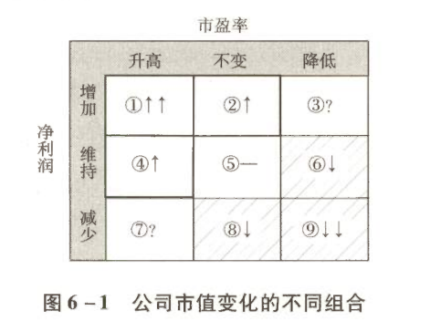

普通投资者的道路
核心问题
对于大部分无法对上市公司实施重大影响的投资者而言，无论投资的出发点是获取企业经营回报、上市公司融资增值，还是股价无序波动回报，最终这些回报都直接体现在股价的变化和股票的分红上。为便于观察，我们可以将股票分红因素叠加回股价变化中去。于是，我们需要直面一个问题：
一、市值波动的源泉
股价变化的核心公式
计算股价变化的公式很简单：
这是从"市盈率(PE) = 股价(P) ÷ 每股盈利(EPS)"转换而来的。虽然从计算意义上说只是一个永远也不会错的套套逻辑（Tautology，同义反复），但它提供了一个重要的思考角度。
总量视角：公司市值公式
为了忽略公司股本送转配等因素的干扰，将上面的公式前后同时乘以总股本，变成总量角度：
由此可知，公司市值的变化有两个源头：
- 市盈率的变化
- 净利润的变化
市值变化九宫格矩阵
将市盈率和净利润的变化进行组合，可得到以下矩阵：

九宫格分析：钱从哪里来？
这张图可以帮助我们思考两个核心问题：
- 钱从哪里来？
- 我有能力获取哪部分利润？
盈利区域分析
💰 来钱之处：①②④区域
| 区域 | 净利润 | 市盈率 | 投资结果 | 吸引力 |
|---|---|---|---|---|
| ① 区域 | ↑ 上升 | ↑ 上升 | 戴维斯双击 | ⭐⭐⭐⭐⭐ 最过瘾 |
| ② 区域 | ↑ 上升 | → 不变 | 赚净利润的钱 | ⭐⭐⭐⭐ |
| ④ 区域 | → 不变 | ↑ 上升 | 赚市盈率的钱 | ⭐⭐⭐ |
净利润和市盈率双双提高，是投资中最理想的状态。
亏损区域分析
⚠️ 亏损区域：⑥⑧⑨区域（"送财童子"）
| 区域 | 净利润 | 市盈率 | 投资结果 |
|---|---|---|---|
| ⑥ 区域 | → 不变 | ↓ 下降 | 纯估值损失 |
| ⑧ 区域 | ↓ 下降 | → 不变 | 纯估值损失 |
| ⑨ 区域 | ↓ 下降 | ↓ 下降 | 戴维斯双杀（最惨） |
二、投资者画像：你属于哪种？
在九宫格矩阵中，你准备脚踏何处安身立命？根据观察，市场参与者主要有三种选择类型。
类型一：来股市花钱打发时间的
特征：
- 没有自己的投资体系
- 不知道要在哪里安身立命
- 将股市投资视为赌场
- 主要依赖别人分享代码或跟着感觉走
- 输赢听天由命
信息来源：亲朋好友、传说中的高手、网络神人、电视股评家、券商员工、媒体写手等
钱确实花了，时间也确实打发了。
类型二：赚取市盈率变化的钱
核心特点：
- 持股期限短（以月或日为单位）
- 一般不预期企业利润会发生大的变动
- 主要意图站在位置④，获取市场情绪变化导致的市盈率升高推动股价上升的利润
A型：低估值回归策略
投资逻辑：
- 选择市盈率低于甚至远低于市场平均水平或该公司历史平均水平的公司
- 意图获取市盈率回归平均水平带来的股价上涨
代表流派：
- 师从本杰明·格雷厄姆、沃尔特·施洛斯、约翰·邓普顿
- 网格交易派
- 以PE百分位来决定投资仓位的投资者
主要特点：
- 依赖低估、分散和常识
- 不追求局部得失
- 乐意承受概率损失
- 获取总体上的回归利润
B型：预测市盈率提升策略
投资逻辑：
- 不在意当前市盈率高低
- 依赖某种判断，认为未来市盈率会提升
- 意图获取市盈率升高带来的股价变化
代表流派：
- 技术图表分析派
- 预测和追逐基本面热点的"赛道派"
- "新闻联播派"
- 宏观牛熊派
这是网络上最容易受到追捧、传奇故事最多、最容易吸引粉丝的类型。
类型三：赚取企业净利润变化的钱
C型：伴随企业成长策略
投资逻辑：
- 以伴随企业成长为核心
- 以收获市盈率变化为意外
- 目标是占领①和②区间
细分类型：
| 类型 | 特点 | 关注重点 |
|---|---|---|
| 价值投资者 | 选择低市盈率，更强调安全边际 | 估值安全性 |
| 成长投资者 | 更注重企业未来成长，在市盈率方面放得比较松 | 企业成长性 |
核心特点：
- 注重对行业前景的深度研究
- 注重对企业财报的深度研究
- 注重对同行竞争的深度研究
D型：重组或逆转企业投资者
投资逻辑：
- 以企业利润水平即将发生根本性逆转为前提实施投资
- 专业预判和灵通消息需兼而有之
两种路径：
专业预判路径
对企业重组或行业逆转的可能性进行研究，通过广泛埋伏于具备重组或逆转可能的目标企业中，守株待兔等待重组发生或宏观环境变化，获取企业净利润大幅变化带来的利润。
灵通消息路径
每一桩重组案里面，几乎不可缺少内部人吃肉的机会。⚠️ 关键问题：是否有资源交换到这样的消息，以及是否有能力承担交换的后果。
三、投资类型评估与选择
各类型对比分析
获利概率排序（从大到小）：
学习难度排序（从易到难）：
成功者的主要分布
无论是从全球以及中国的历史经验上看，还是从背后的逻辑支撑上推理，成功者主要集中在A型和C型。
如何选择适合自己的道路？
思考清楚自己的定位，比追逐几个涨停板代码重要得多。
| 思考维度 | 关键问题 |
|---|---|
| 兴趣爱好 | 打破砂锅问到底，理清自己的爱好和优劣势 |
| 努力方向 | 掂量自己乐意在哪方面付出努力 |
| 竞争优势 | 哪方面可能取得对其他人的局部优势 |
| 生存之道 | 哪种方法可以支撑自己在这个市场生存 |
要规避做"送财童子"的命运，你必须在这个问题上花时间。相信我，这问题比几个涨停板的代码重要一百倍。本章作者个人走的是C路线（伴随企业成长策略）。